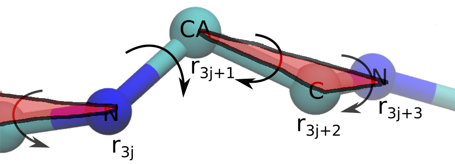

Protein
Code
Introduction
The structural module of AlphaFold2 represents protein backbone as a set of rigid bodies. To replicate this part we need a dataset of sequences and structures that can be inferred from sequences. We then have to establish connection between rotation and translation of rigid bodies and vector fields and finally devise a loss function.
Figure 1: Structural part of AlphaFold2.
Dataset
First we generate a sequence (Figure 2A), consisting of fragments(grey) and patterns(colored). Each pattern is an alpha-helix and fragments are just some flexible part of a protein that we use later. Afterwards, we generate displacements of patters and insert different amino-acids at the beginning of a pattern, that correspond to the displacements(yellow).
Then we place the patterns according to the generated displacements (Figure 2B). We treat this placement as a rigid body, to which we align the final structure.
Figure 2C shows the final structure that is aligned to the generated pattern placement. We treat fragments as flexible and patterns as rigid during the alignment process. Right part shows RMSD of the final structure during alignment.
Figure 2D shows samples from the dataset generated this way.


Figure 2: Protein dataset generation steps.
Internal representation of a protein structure
Iterative SE(3) part of the model has internal representation of features as fields. However, final result should be converted to a set of rigid bodies. To connect the two representations, we have to represent rotation matrix and translation vector of a rigid bodies in a common reference frame as vector fields.
Translation of the rigid bodies are represented as a sum of displacements as in the previous chapter. However rotation representation is less trivial. We have to recall two facts:
- Skew-symmetric matrixes have a vector space structure
- Skew-symmetric matrixes and orthogonal matrixes have an isomorhism
In DeepMind's implementation each amino-acid corresponds to a single rigid body, however exact correspondense is unknown at the moment. We chose atoms $C_\alpha$, $C$ (amino-acid $j$), $N$ (amino-acid $j+1$) to form a single rigid body in our implementation (Figure 3). We place $C_\alpha$ atom at the origin of the reference frame and atoms $N$ and $C$ according to the chemical structure of the protein backbone. Now, we compute the atomic representation of the protein backbone by multiplying the vectors that belong to a single rigid body by the corresponding rotation and translate the result with the corresponding translation.

Figure 3: Rigid bodies representation of a protein.
Loss function
We use the differentiable minimum root mean square deviation from the paper by Evangelos Coutsias [1] as out loss function. This layer is implemented in TorchProteinLibrary(link).First we move both target and input structures (positions $\mathbf{x}_i$ and $\mathbf{y}_i$) to their centers of mass, then we compute the correlation matrix $R$: $$ R = \sum_i^{N_{atoms}} \mathbf{x}_i \mathbf{y}^T_i $$ Using this matrix we compute $T$: $$ T = \begin{bmatrix} R_{11} + R_{22} + R_{33} & R_{23} - R_{32} & R_{31} - R_{13} & R_{12} - R_{21} \\ R_{23} - R_{32} & R_{11} - R_{22} - R_{33} & R_{12} + R_{21} & R_{13} + R_{31} \\ R_{31} - R_{13} & R_{12} + R_{21} & -R_{11} + R_{22} - R_{33} & R_{23} + R_{32} \\ R_{12} - R_{21} & R_{13} + R_{31} & R_{23} + R_{32} & -R_{11} - R_{22} + R_{33} \\ \end{bmatrix} $$
We then compute $\lambda$, the maximum eigenvalue of matrix $T$, and its corresponding eigenvector $\mathbf{q}$. This eigenvector corresponds to the quaternion that gives the optimal rotation of one structure with respect to the other. The rotation matrix can be computed using the following expression: $$ U = \begin{bmatrix} q^2_0 + q^2_1 - q^2_2 - q^2_3 & 2(q_1 q_2 - q_0 q_3) & 2(q_1 q_3 + q_0 q_2) \\ 2(q_1 q_2 + q_0 q_3) & q^2_0 - q^2_1 + q^2_2 - q^2_3 & 2(q_2 q_3 - q_0 q_1) \\ 2(q_1 q_3 - q_0 q_2) & 2(q_2 q_3 + q_0 q_1) & q^2_0 - q^2_1 - q^2_2 + q^2_3 \end{bmatrix} $$ The corresponding minimum RMSD is computed using the formula: $$\min{RMSD} = \sqrt{\frac{\sum_i{|\mathbf{x}_i|^2 + |\mathbf{y}_i|^2} - 2\lambda}{N_{atoms}}} $$
The derivative of RMSD with respect to the input coordinates is computed using the formula: $$ \frac{\partial RMSD}{\partial \mathbf{x}_i} = \mathbf{x}_i - U^T \mathbf{y}_i $$
Model
Essentially the model for this dataset stays the same as for the previous one (Figure 4). THe only change is that now we have to pass another vector field between two-layer SE(3) transformer blocks, that represents rotations. Additionally, as an input, we have to pass initial protein conformation: in our case it is just an extended chain. However, in the DeepMind implementation the initial conformation can come from a template structure or from the previous result.
Figure 4: Protein structure prediction model.
Results
After training for 100 epochs we have the following result:| # | Train | Test |
|---|---|---|
| Epoch 0 | 6.56 | 6.54 |
| Epoch 100 | 1.37 | 1.42 |
Citations
- 1. Evangelos A. Coutsias, Chaok Seok, and Ken A. Dill. "Using quaternions to calculate RMSD". Journal of computational chemistry 25:15 (2004) 1849-1857 (link)